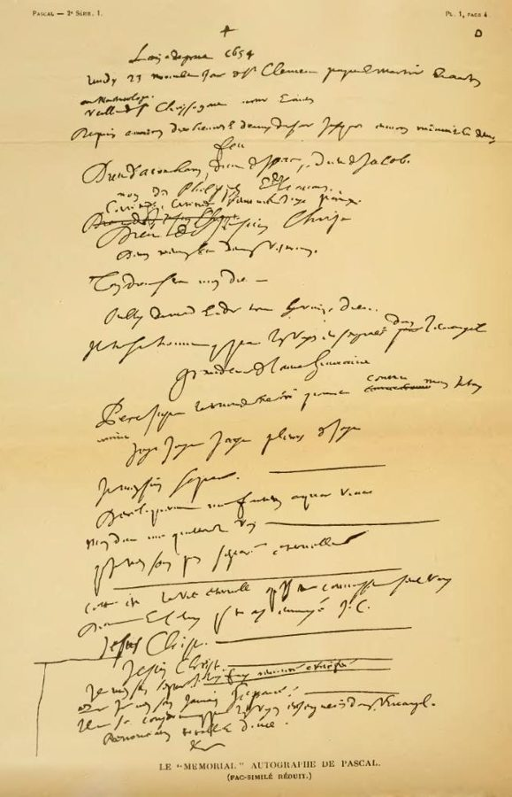
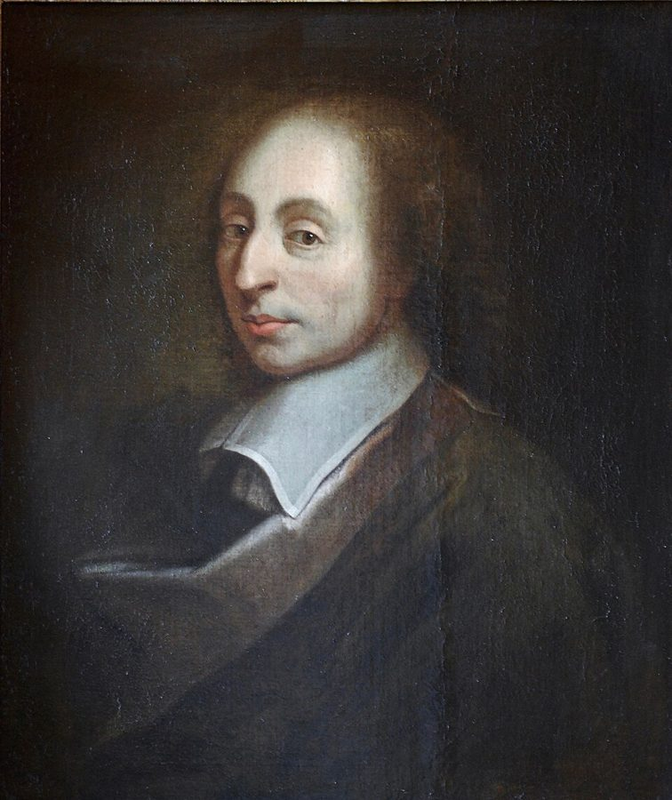

这一页在做什么
第 7 章一章一页，是全书哲学最密的一章。四节讲了一串思想家：从亚里士多德到莱布尼茨的「好奇心」，帕斯卡的两种无限和他的赌注，狄金森的一首短诗，布鲁门贝格的《生命时间与世界时间》，马夸德的「短缺」。作者这回从「技艺长」那一头讲起：知识、科学、世界要的时间越来越多，多到无限。读的时候抓两条线：无限是怎样一步步进来的；面对无限，人这一头还能做什么。

帕斯卡《追思》（Mémorial）手稿的缩小影印，取自 Brunschvicg 编的帕斯卡全集。第一行记的年份是 1654 年，下一行是那一夜的日子；第 26 段说帕斯卡把这张纸带在身上直到去世。- Luc -，公有领域，维基共享资源 读之前：这一页在全书的哪里
第 6 章停在普鲁斯特：余生短，作品长，还是「生命短、技艺长」那个格局。这一章把技艺那一头拉到无限，全书第一页借来「时间剪」一词的布鲁门贝格也亲自出场。作者一路回头点名：第 7 段说拉伯雷的作息表接第 1 章第 3 节的阿尔贝蒂 ，第 17 段提醒想想《浮士德》里的瓦格纳，第 33 段说的长寿是「自胡弗兰以来」，第 34 段把布鲁门贝格的「可以的时间」等同塞涅卡「自己的时间」。下一章起，另一端就换成死亡了。
如果知识、科学、世界那一头是无限长的，「生命短，技艺长」这道比较还成立吗？人这一头还能做什么？
读的时候带着这几个问题。不用先找答案，读完回来对照「检查一下理解」。
作者为什么说只靠积累知识，不可能一劳永逸地掌握技艺和科学？莱布尼茨那「一小步」改变了什么？§1
帕斯卡的赌注里，人押上的是什么，可能赢到什么？这个赌是推荐给谁的？§2
布鲁门贝格的「剪刀」最后怎么了？长寿和省时间的技术，他指望得上吗？§3
马夸德对「快」给了两个回答。你觉得作者更认同哪一个？§4
这一页的路线
四节四个主角，走的是同一个方向：技艺那一头越拉越长。第 1 节先做「好奇心」这个词的概念史（第 5 段插进一段女人和好奇心的旧偏见），第 7 段讲学不完的书；之后两处花饰各隔开一段，先是塔索，再是莱布尼茨，科学从此没有终点。第 2 节帕斯卡把无限从空间搬到时间，引出赌注；分隔之后作者说「算够了」，换上狄金森作对照。第 3 节从海德格尔一句话跳进布鲁门贝格，第 32 段把他整本书压成一段；第 36 段泰勒斯的典故像题外话，第 37 段又突然转到希特勒，这是全章最陡的一处。第 4 节马夸德把目光拉回人的尺度，作者最后把这几位都算作「古人」。
§1
§2
§3
§4
好奇心
学不完 拉伯雷、塔索
莱布尼茨
两种无限
赌注
狄金森
世界时间 布鲁门贝格
剪刃碎了
马夸德 慢、习惯
本站示意图。上面一排蓝点是知识、科学、世界那一头（越来越长，直到无限），下面一排橙点是人的一生那一头，中间的绿点是两头的交手处。折线是阅读顺序，虚线是节的分界。 作者落在哪： 技艺那一头一步步变成无限：科学没有终点，一生对永恒近乎零，世界时间和生命时间不成比例，布鲁门贝格连剪刀的比喻都放弃了。作者最后借马夸德回到人的尺度：时间短，所以要慢，要靠习惯。
分节地图
这一页是原书第 7 章的全部四节。粗体是这一节的主角；斜体是英文这一节开头的几个词，在电子书里搜它就能跳到那里；节里的转折用段号点出来。读完打个勾。
好奇心的来历，拉伯雷、塔索和莱布尼茨约 1600 词 If life is short and art … 第 2–6 段是「好奇心」的概念史，第 7 段起讲学不完的书，第 11 段起是莱布尼茨。 帕斯卡的两种无限和赌注，狄金森的诗约 1100 词 At approximately the same time that … 第 23–26 段是赌注；第 27 段起换到狄金森，作者说算够了。 布鲁门贝格的生命时间和世界时间约 1500 词 After Martin Heidegger, in his fundamental … 第 32 段压缩了布鲁门贝格整本书；第 37 段起转到希特勒。 马夸德：时间短，所以要慢约 900 词 In his way of philosophizing, … 第 41、42 段是马夸德的两个回答：一快一慢。第 43 段收在「古人」上。
先用中文过一遍：这一页的概念
作者常常一笔带过、默认你懂的概念，这里先从书外讲一遍：它从哪来，是什么意思。它在这一页起什么作用，看每块最后一句。讲过的概念都汇总在概念汇总 。
§1 好奇心 curiositas，theoretical curiosity（theoretische Neugierde） 拉丁文 curiositas 和 cura（操心、用心）同根，原义是「对什么都上心」。亚里士多德《形而上学》第一句说人天生想要知道，古人多把求知欲看成好东西。基督教的教父却把它列为毛病：奥古斯丁在《忏悔录》第十卷把它叫作「眼目的情欲」，人东看西看、打听闲事，耽误的是救灵魂的工夫。德国哲学家布鲁门贝格在《近代的正当性》（1966）里讲了这段「审判」：到了近代，好奇心翻了案，成了推动科学的正当动力，他称之为「理论的好奇心」。可以想成同一种劲头的两种名声：刷网页刷到半夜是「虚妄的好奇」，查文档查到弄懂为止是「理论的好奇」。
在这一页： 第 2–6 段讲它怎样从恶习变成科学的动力；第 13 段的 Weltneugierde 让技艺那一头没有了尽头。
§2 帕斯卡的赌注 le pari de Pascal 出自帕斯卡身后出版的《思想录》里一则长札记。他对不信的人说：上帝在不在，理性判不了，可你不能不押。押「在」，赌注是有限的一生里的一些享乐；赢了得到无限的幸福，输了只损失那一点。1654 年他和费马通信讨论赌局中断时怎样分钱，这是概率论的起点之一。今天分析这类赌局用「期望值」：每种结果的得失乘它的概率，再加起来。下面这张表是本站把算式摊开：只要上帝存在的概率不是零，押「在」那一行就有一项是无限大，期望值就是无限大；押「不在」那一行，期望值最多是有限的。p 取多少，结论都不变，这正是赌注的要害。常见的反驳是：拿什么都不知道的事来算概率，本身站不住。
上帝存在（概率 p）
上帝不存在（概率 1−p）
押「存在」 信，照信的样子活
押「不存在」 不信，照常过
赢得无限 +∞
损失一小段一生 −c（c 有限）
错过无限 得不到 +∞
省下那一小段 +c
押「存在」的期望值：p × ∞ − (1−p) × c = ∞（只要 p > 0）
押「不存在」的期望值：最多 (1−p) × c，有限
本站示意图，算式是本站加的，书里没有。c 是押上的那一点生命时间。作者第 24 段设的是输赢机会各半（p = 1/2），表里换成任意 p，结论一样。 在这一页： 第 23–25 段。作者把它说成一场拿时间而不是拿钱下注的博弈，只讲了得失悬殊，没有算期望值。
§3 生命时间和世界时间 Lebenszeit und Weltzeit（Hans Blumenberg，1986） 这是布鲁门贝格 1986 年一本书的书名。生命时间 是一个人从生到死、亲身过的那一段；世界时间是一个人之外的时间：宇宙以百万年计的演化，人类历史，还有一切可能做、可能知道的事。两者不是长短之差，而是量级之差，根本不成比例（德文 Unverhältnis）。全书第一页借来的时间剪 ，原本就是这本书里的说法：两片刀刃，一片是生命时间，一片是世界时间，越张越开。打个比方：你想读的书、想看的地方、想学的技术不断增加，而你的余生只会减少；这不是计划没排好，是两种时间本来就不在一个尺度上。
在这一页： 第 30–35 段。第 31 段说它比「技艺长」更尖锐，第 32 段剪刀的比喻在布鲁门贝格手里碎了。
§4 短缺 shortage（Knappheit），Odo Marquard 经济学说「短缺」，是东西有限、需要无限，所以要选、要省。德国哲学家马夸德把它用到人的时间上：人终有一死，一生太短，没有时间把一切都从头想过、从头论证、从头改造。所以人只能大半依靠已经有的东西：习俗、惯例、传下来的做法（他叫 Üblichkeiten，「通常的做法」），能改的只改一小部分。他把这看成怀疑论的道理，而不是保守的借口：不是旧的都好，是来不及样样换新。这本书德文原版的书名 Knappe Zeit，正是「短缺的时间」。程序员可以想到遗留系统：明知不完美，也不能全部重写，因为没有那么多时间。
在这一页： 第 39–42 段。作者用它把讨论从世界时间拉回人的尺度，再引出马夸德的「慢」。
书里的人和作品
按在书里出现的顺序排，标题前是节号。作品只讲到读懂这一节需要的程度。
§1 好奇心的前史：从亚里士多德到但丁第 3 段的格言是亚里士多德《形而上学》的第一句，常见的英译是「人人天生想要知道」，书里译作 curious。第 4 段几位教父的话都只一句：德尔图良那句出自《论异端的时效》，他反对拿希腊哲学去追问信仰；奥古斯丁的「虚妄的好奇」在《忏悔录》里，他骂的也是年轻时的自己。但丁那句是《炼狱篇》第 21 歌开头：天生的求知之渴，只有撒玛利亚妇人向耶稣求的那种水才能解（《约翰福音》第 4 章，耶稣在井边向她要水喝，再许她「活水」）。
德尔图良 Tertullian，约 160–约 220 北非迦太基的基督教作家，用拉丁文写作的第一位重要教父。第 4 段拿他代表「有了基督就不用好奇」。
奥古斯丁 Augustine，354–430 北非希波的主教，《忏悔录》《上帝之城》的作者。第 4 段说他把好奇心列入恶习，理由是浪费时间。
§1 女人和好奇：一段旧偏见第 5 段列了一串「好奇的女人」：夏娃；赫西俄德笔下的潘多拉；佩罗童话《蓝胡子》（1697）里打开禁室的妻子；克尼格《与人交往》（1788）的一句话；瓦格纳歌剧《罗恩格林》（1850）里的埃尔莎，她被嘱咐不许问丈夫的名字，偏偏问了。作者把这写成男人「顽固的看法」，是在交代一种传统，不是他自己的主张。书里有两处和通行说法不同：赫西俄德写的是一只大瓮（pithos），放出的是灾祸，「盒子」是后世的说法；佩罗的蓝胡子是个富人，不是国王。
§1 学不完的书：沃尔夫、拉伯雷、塔索第 7 段从语文学家讲起。F. A. Wolf 是德国古典学家，1795 年的《荷马导论》开了荷马问题的现代研究。拉伯雷的《巨人传》第一部《卡冈都亚》（1534 年前后）里，巨人的老师给他排了从早到晚不留一分钟的课表；这一部快结尾时，卡冈都亚为一位修士建了德廉美修道院，院规只有一条「想做什么就做什么」，院里不设钟。作者拿这一前一后说明：只靠积累知识，学不到头。第 8 段塔索的对话《波尔齐奥》（书里写 1593 年）以真实的哲学家 Simone Porzio（1496–1554）命名；书里说，对话里 Porzio 相信学问能到头，另一位对话者 Muzio Pignatelli 不信。
拉伯雷 François Rabelais，约 1494–1553 法国作家、医生、修士。《巨人传》五部，写巨人父子的荒诞故事。第 7 段说巨人得是巨人，才吞得下那么多学问。
塔索 Torquato Tasso，1544–1595 意大利诗人，代表作是史诗《被解放的耶路撒冷》，也写了不少对话体的文章。第 8 段说他的对话明确承认了学问到不了头。
§1 莱布尼茨和雨果莱布尼茨是德国哲学家、数学家，和牛顿各自发明了微积分。第 11 段说的 De arte inveniendi（《论发现的技艺》，书里写 1669 年）是一篇很短的札记，作者说它被冷落了。不要和他 1666 年的《论组合的技艺》混在一起。第 13 段作者说雨果那句话出自「1864 年出版的一部小说」；其实雨果 1864 年出的是论著《威廉·莎士比亚》，那句话在第一部第三卷「艺术和科学」里，说科学寻求永动，而它自己就是永动。
莱布尼茨，Christoph Bernhard Francke 画，约 1695 年，这里是局部。Christoph Bernhard Francke，公有领域，维基共享资源 §2 帕斯卡：《思想录》和《追思》帕斯卡是法国数学家、物理学家，十九岁造出一台能做加减法的计算机。1654 年 11 月 23 日夜里，他经历了一次宗教上的「火」的体验，当夜写在一张纸上，缝在衣服里带了一辈子，死后才被发现，这就是《追思》（Mémorial）。此后他转向护教，准备写一部为基督教辩护的大书，没有写成；留下的札记 1670 年出版，就是《思想录》（Pensées），各版本的排序和编号不同，书里注 11 也这样说。作者拿他说明：无限进了数学，也进了人对时间的算计。

帕斯卡像，约 1690 年，照 François II Quesnel 的画像临的复本。作者不详，公有领域，维基共享资源
狄金森，约 1848 年的银版照片，修复过的版本。作者不详，公有领域，维基共享资源
§2 狄金森和她的诗狄金森是美国诗人，一辈子几乎没离开马萨诸塞州的阿默斯特小镇，后半生很少见人。她写了将近一千八百首短诗，生前只发表过十来首，大部分是死后从抽屉里找出来的。第 28 段这首写于 1862 年，1890 年第一次印出来，用的是她惯用的破折号和大写。作者说帕斯卡算了，她也算，只是算法完全不同，放在这里作对照。
§3 布鲁门贝格，泰勒斯，和希特勒那一段布鲁门贝格是德国哲学家，以研究隐喻和「近代」著称，书写得长，文笔讲究。第 36 段的典故出自柏拉图《泰阿泰德》：泰勒斯仰头看星星，掉进井里，一个色雷斯女仆笑他只顾天上、看不见脚下。布鲁门贝格 1987 年专门写了一本书谈这个笑（书里注 22）。第 37–38 段讲他书里一小节（注 23），判断是哈夫纳和布鲁门贝格的：哈夫纳写《希特勒评注》（1978）时最早从史料里读出，战争期间、至少是后期，希特勒执迷于要在有生之年以世界大战的速度建成德意志的世界帝国；布鲁门贝格同样确信，称这种「强行合拢」是希特勒最后一桩骇人听闻的事。Weinrich 自己措辞克制，说希特勒「似乎」一直抱着这种希望。
布鲁门贝格 Hans Blumenberg，1920–1996 德国哲学家。第 30 段说他被定为「半犹太人」，险些没逃过大屠杀；书里说他战后在吉森和明斯特任教。
哈夫纳 Sebastian Haffner，1907–1999 德国记者、历史作家，1938 年流亡英国。第 38 段说他最早在史料里看出希特勒的这种执念。
§4 马夸德和他的同道第 4 节点了几位德国学者的名字，作者都没介绍。第 34、41 段的科泽勒克（Reinhart Koselleck）是史学家，研究「概念史」和历史时间的加速；吕贝（Hermann Lübbe）是哲学家，提出现代人「在当下停留的时间越来越短」。第 40 段的哈布瓦赫（Maurice Halbwachs）是法国社会学家，「集体记忆」这个概念就是他提出的。马夸德的书多是雷克拉姆出版社（Reclam）的小开本，第 39 段说的就是这个。
马夸德 Odo Marquard，1928–2015 德国哲学家，长年在吉森大学任教，以短小俏皮的随笔著称，自称怀疑论者。书里只写了生年。第 4 节的主角。
哈布瓦赫 Maurice Halbwachs，1877–1945 法国社会学家，死于布痕瓦尔德集中营。第 40 段借他说明惯例多半是社会的。
图里的引文
下面这段在你的电子书里是图片，长按查不了词，也搜不到。先说它在屏幕上的位置，再逐行给中文意思；行首的斜体是图里这一行开头的几个词，用来和图对上。这首诗原作就是英文，本站照图直接给意思。
§2 第 28 段 · 狄金森的诗（Johnson 编号 301，1862 年） · 英文原作在第 27 段末尾（…as for example in this poem:）之后。
I reason, Earth … 我想过了：人世是短的，And Anguish—absolute—, 痛苦是绝对的，And many hurt, 许多人受着伤，But, what of that? 可那又怎样？I reason, we … 我想过了：我们会死，The best Vitality 再旺盛的生命力，Cannot excel Decay, 也胜不过衰朽，But, what of … 可那又怎样？I reason, that … 我想过了：到了天上，Somehow, it will … 总会有办法扯平，Some new Equation … 给出一个新的等式，But, what of … 可那又怎样？
大意： 三节一样的格式：先「想过了」一件事，再用同一句反问把它推开。作者第 29 段读作她不为人生短而愁，天上的公道账她也不太看重。最后那个反问连天国也一并推开，也可以读出怀疑。
I reason
第 1 行
我推想，我想过了
reason 作动词是「推理、盘算」。每节开头都用它，和帕斯卡那种数学的「算」形成对照，作者说她也算时间，算法却完全不同。
Anguish—absolute—
第 2 行
痛苦是绝对的
省了动词 is，两个破折号把 absolute 隔出来加重。狄金森爱用破折号和句中大写，这是她的标志，不是印错。
excel
第 7 行
胜过
及物动词，excel Decay 是「胜过衰朽」，不是今天常见的不及物用法「擅长」。
it will be even
第 10 行
会扯平，账会两清
even 是记账的说法：收支相抵、谁也不欠谁。下一行的 Equation 接着用数学的词，作者第 29 段就抓住这两个词说「一笔公道的新账」。
词与短语
你用 Kindle，单个生词长按就能查，这里只收词典帮不上的：每个词都认识、合起来不懂的说法，学术腔，没翻译的外文，典故。斜体小字是原句里连续的几个词，错字照电子书原样，搜它就能跳到那里。图里的词在上面「图里的引文」里。
§1 好奇心的来历，拉伯雷、塔索和莱布尼茨
be decided in favor of
… be decided in favor of individual life?
判给……获胜
把生命和技艺的关系说成一场赛跑（this race），问的是：个人的一生有没有可能跑赢。前面的 perhaps 和 unheard-of efforts 说明作者并不看好。
an unlikely name
… It has an unlikely name: curiosity, …
一个出人意料的名字
unlikely 这里不是「不大可能」，而是「想不到会是它」：推动科学的，竟是一向名声不好的好奇心。
conceptual history
… examine briefly the conceptual history of this word, …
概念史
对应德文 Begriffsgeschichte，德国人文学科的一个传统：追一个词的意思在历史上怎么变。下面第 3–6 段就是一小段概念史。
late Latin romance
… world of the late Latin romance …
晚期拉丁语的传奇小说
romance 不是「爱情」，是古代的长篇虚构故事。阿普列乌斯（Apuleius）的《金驴记》，主人公就是因为好奇试用魔药，变成了驴。
Nobis curiositate opus non est post Christum
… dispense with any kind of curiosity: …
（拉丁文）有了基督，我们就不需要好奇了
作者在前面给了英译。拉丁原文的句式是「对我们来说，好奇心在基督之后不再是必需的」：post Christum 是「基督之后」。
is chastising himself
Augustine is chastising himself even when …
（他）也是在责备自己
说奥古斯丁谴责好奇心时，也在检讨自己：《忏悔录》里他坦白过年轻时爱看热闹、爱打听。even when 是「连……时也是」。
vana curiositas
… (vana curiositas) in the Christian catalogue …
（拉丁文）虚妄的好奇心
vanus 是「空的、徒劳的」，英文 vain、vanity 的来源。catalogue of vices 是「恶习清单」。
la sete natural che mai non sazia
… among the spiritual forces behind his journey …
（意大利文）那永远解不了的天生之渴
但丁《炼狱篇》第 21 歌第 1 行，作者在前面给了英译。电子书印作 the mai non si sazia，the 是 che（那个）的扫描错字，si 是多出来的。
qualifies this
… but then qualifies this by noting that …
又给这话打了折扣
qualify 在学术英语里是「加限定、加保留」，不是「合格」。但丁先肯定求知之渴，又说恩典之水更解渴。
in the persistent opinion of men
In the persistent opinion of men, …
照男人们一贯的看法
persistent 是「顽固不改的」。这几个词告诉你：「女人天生好奇」是男人的看法，作者在转述，不是他的主张。
dilatory-curious side
… force its dilatory-curious side into the …
磨磨蹭蹭、东看西看的那一面
dilatory 是「拖延的、耽误时间的」。好奇心坏名声的那一半被关进了珍奇柜，剩下的一半才升格为科学的动力。
Kuriositätenkabinett
… (Kuriositatenkabinett) so that the thirst for …
（德文）珍奇柜
16、17 世纪欧洲贵族和学者收藏怪石、标本、异域器物的柜子或房间，博物馆的前身。英译 knickknack cabinet（小摆设柜）带点贬义。电子书丢了变音 ä。
it was incumbent upon them
It was incumbent upon them, by extending …
这是他们（语文学家）的职责
incumbent upon 是「落在……肩上的义务」。句子中间插了一长串手段，主干是：他们有责任 to keep the arts under control（把各门学问掌握在手里）。
polymathia
… ideal of broad knowledge (polymathia) seemed attainable.
（希腊文）博学
poly（多）+ mathein（学）。英文 polymath 就是「通才、博学家」。
as they must be
… are giants, as they must be, because …
（他们）也只能是巨人
作者开玩笑：要在有限的一生里吞下那么多学问，非得是巨人不可。must 是逻辑上的「必然」。
horarium, horaire, Stundenplan
… the timetable (horarium, horaire, Stundenplan).
（拉丁文、法文、德文）作息表、课表
拉丁文 horarium 原指修道院按钟点排定的祈祷时刻。作者照例给三种语言，提醒这个词和「钟点」（hora、heure、Stunde）同出一源。
Abbey of Theleme
… utopia of the Abbey of Theleme …
德廉美修道院
Thélème 来自希腊文 thelēma（意愿）。院规只有一句 Fais ce que voudras（想做什么就做什么），和修道院的钟点作息正相反。
all the way, once and for all
… pursue art and science all the way, …
一直追到头，一劳永逸
all the way 是「到底」，once and for all 是「一次就彻底解决」。句首的 Evidently 是作者的判断：显然做不到。
Il Porzio ovvero de le virtu
… his dialogue Porzio, or on the Virtues …
（书名）《波尔齐奥，或论德行》
ovvero 是「或者说」，意大利文书名常用这种双标题。de le 是 delle（关于那些）的旧写法，电子书丢了重音，应为 virtù。
gives his name to
The man who gives his name to …
（对话）以他命名
不是「把名字交给」，是「用他的名字作题目」。
da le fatiche nascano fatiche
… mi pare the da le fatiche …
（意大利文）劳苦生出新的劳苦
塔索对话原文，第 9 段是英译。nascano 是「生出」的虚拟式。电子书这里的 the 也是 che（「我觉得」后面的「that」）。
lies one step beneath his level
… actually lies one step beneath his level …
比他（作为科学家）的水平低一级
说修辞学这门「技艺」对莱布尼茨来说是低一档的题目，不是「藏在他脚下」。
topoi, loci
… (Greek topoi, Latin loci) in the memory …
（希腊文、拉丁文）「处所」，论题
古典修辞把记忆想成一排房间，论据分门别类放在各个「处所」，演说时按图去找。英文 topic、commonplace 都从这里来。
does not despise
Leibniz does not despise the rhetorical doctrine …
并不看轻
否定式的轻说：意思是还算重视，但接着 nonetheless 一转，只给它一个次要的位置。
more noble sister
… of invention's more noble sister, the art …
更高贵的姐妹
把两种「发现的技艺」比作一家的两姐妹：同出一门，综合的那位地位更高。
invenire
… (as the Latin verb invenire must henceforth …
（拉丁文）找到；发现
修辞学里的 inventio 是去现成的「处所」里找论据；作者说从莱布尼茨起，这个词得译成「发现」，找的是还没人问过的问题。英文 invent 从这里来。
Weltneugierde
… (Weltneugierde, Blumenberg). In a novel published …
（德文）对世界的好奇
Welt（世界）+ Neugierde（好奇心，字面是「对新东西的渴望」）。布鲁门贝格的用语，英译 global curiosity。
La science cherche le mouvement perpetuel
… put this point with unsurpassable succinctness: …
（法文）科学寻求永动
后半句：它找到了，就是它自己。作者在前面给了英译。出自雨果 1864 年的《威廉·莎士比亚》，作者说是「小说」，其实是论著，见上面「书里的人和作品」。
§2 帕斯卡的两种无限和赌注，狄金森的诗
esprit de geometrie
… favored by the esprit de geometrie.
（法文）几何精神
帕斯卡的用语，指从少数定义和公理一步步推出结论的头脑；和它相对的是 esprit de finesse（敏感精神），凭直觉一眼看出许多细微的东西。应为 géométrie。
not unlike
… short aphorisms not unlike those of Hippocrates-he …
和……颇为相像
双重否定的轻说，等于 rather like。作者顺手把帕斯卡接回全书起点的希波克拉底：都写短句。电子书里 Hippocrates-he 中间是破折号。
epistemological-methodological infinity
… is referring to an epistemologicalmethodological infinity here, …
认识论和方法论上的无限
电子书把两个词粘成了一个。意思是：不是宇宙有多大，而是「求知」这件事本身停不下来，因为每个答案又带出新问题。
(Wagner in Faust!)
… him to know (Wagner in Faust!).
想想《浮士德》里的瓦格纳！
瓦格纳是浮士德的助手，一个死读书的学究，第一部里说自己知道的已经很多，却想知道一切。作者拿他作反例：以为总有一天会学完。浮士德见第 2 章，
02b 。
il vous reste infiniment à savoir
… (il vous reste in finiment a …
（法文）你要知道的东西还剩无限多
帕斯卡原话，作者在前面给了英文意思。电子书把 infiniment 断成了 in finiment。
does not leave … in peace
… not leave the mathematician Pascal in peace.
一直缠着（帕斯卡）不放
主语是 the idea of infinity：无限这个念头让他不得安宁。
make do with
… he must make do with a description: …
只好将就着用
无限长的时间有现成的词「永恒」，无限短的没有，帕斯卡只好用一个描述凑合：「时间的虚无」（un néant de temps）。
in its temporal garb
… infinite in its temporal garb, that …
披上时间外衣的（无限）
garb 是「装束」。无限原本是空间和数学里的，这里换成时间的样子出场，就是永恒。
game-theory risk calculation
… is a game-theory risk calculation that …
博弈论式的风险计算
前面的 In modern terms 提醒这是作者借来的现代说法，帕斯卡那时还没有博弈论。见概念块「帕斯卡的赌注」。
small account of life-time
… stake his small account of life-time on …
他那点不多的生命时间
account 是「账户（里的余额）」，接着前面的 not money but rather time：把一生的时间当成一笔小存款押上赌桌。stake 是「下注」。
infinitesimally calculated
… to the infinitesimally calculated advice given …
用无穷小算出来的
文字游戏：infinitesimal 是微积分的「无穷小」。帕斯卡是数学家，作者说他的劝告是拿无限大和无穷小算出来的。
those of little faith
… unbelievers and those of little faith, …
信心不足的人
出自福音书里耶稣责备门徒的话 O ye of little faith（你们这小信的人）。不是「没什么信仰」，是信得不坚定。
Memorial
… described in his Memorial and carried with …
（帕斯卡的）《追思》
不是「纪念碑」，是那张记下 1654 年 11 月 23 日夜里体验的纸，见本页开头的图。
calculated and speculated enough
Now we have calculated and speculated enough, …
算计得够了，揣测得也够了
speculate 一词两义：哲学上的「思辨」，生意上的「投机」。接在赌注之后，两层意思都在。作者用这句话自己收住，转到狄金森。
count for much
… that does not count for much either.
也不怎么要紧
count for much 是「分量重」。这一段满是「算」（count the days、reckoning），最后一个 count 却是「算数、要紧」，作者在玩这个词。
§3 布鲁门贝格的生命时间和世界时间
Being towards death, das Sein zum Tode
… life projects its short life-time …
（英文、德文）向死存在
海德格尔《存在与时间》的核心概念，在这里第一次出场：人的存在始终朝着自己的死。详见
向死存在 。
Lebenswelt
… (Husserl: Lebenswelt), the opposite operation became …
（德文）生活世界
胡塞尔的术语：科学理论之前、人日常亲身经历的那个世界。the opposite operation 是反过来：从生活世界出发，把短短的一生投到大世界上。
bearing the stigma of being a half-Jew
… bearing the stigma of being a …
背着「半犹太人」的污名
half-Jew 是纳粹种族法的分类，作者加了引号，表示这是当时强加的说法。
put a point on
… has sharpened and put a point on …
把（问题）削尖了
sharpen 和 put a point on 都是削铅笔的说法：问题被推到更尖锐。下文说怎样尖锐：拿一生直接去比世界时间，不再经过技艺这一层。
the more one approaches it, the farther it recedes
… the more one approaches it, the farther …
越走近，它退得越远
The more…, the more… 句型。像地平线：走得再远也到不了。
in secular dimensions
… with human time in secular dimensions.
以百年计的尺度
secular 这里不是「世俗的」，是拉丁文 saeculum（一个世代、一百年）的本义：世界历史至多能以「世纪」为单位，和人的时间比一比。
Unverhältnis
… (Unverhaltnis) and the abyss that separates …
（德文）不成比例
Verhältnis 是「比例、关系」，加否定前缀 un-：两者之间连比例都谈不上。前面的 incommensurability 是数学上的「不可公度」。
lay down our pencils
… we must lay down our pencils, …
只好放下笔，不算了
接着前面的 resigned summation（无奈的总结）：算题算到这里，再算也算不出满意的解。
Lebenskünstler
… as life-artists (Lebenskiinstler), seek to make …
（德文）会过日子的人
德文日常说法，指在什么处境下都能把日子过得舒坦的人，英文直译 life-artist 读来别扭。电子书把 ü 识别成 ii。
conditio temporalis
… within the limits of their conditio temporalis?
（拉丁文）人受时间所限的处境
仿 conditio humana（人的处境）造的说法。马夸德在第 39 段也用它。
failure of macrobiotics
… and even expressly refers to a …
长寿术的失败
macrobiotics 就是第 2 章胡弗兰的
长寿术 ，不是今天说的「长寿饮食法」。布鲁门贝格对延寿不抱希望。
can be credited
… savings in time that can be credited …
可以记到账上
记账的说法：省下的时间像存款一样入账。整句还是「时间就是金钱」那一套比喻。
the daily erosion of time can be stemmed
… daily erosion of time can be stemmed.
挡住时间每天的流失
stem 作动词是「堵住（水流）」，和 erosion（冲蚀）配成一个水的比喻。
Mußzeit / Kannzeit
… (Muflzeit) that every human being has …
（德文）必须的时间／可以的时间
muss（必须）和 kann（可以）各加 Zeit。电子书把 ß 识别成 fl。作者说「可以的时间」不是娱乐时间，而是塞涅卡的
自己的时间 。
stands there blamed
… little humanity still stands there blamed, …
站在那里出丑
blamed 在这里不好按「受责备」读，后半句说人去和世界时间比，只招来一声冷笑，意思接近「下不来台、出洋相」。
more raised than answered
… are more raised than answered in Blumenberg's …
提出的多，回答的少
raise a question 是「提出问题」。作者马上补一句：照莱布尼茨的看法，多提问不等于不严谨。
lets run on in the void
… sometimes lets run on in the void.
让它在虚空里空转
宾语是前面的 human time：布鲁门贝格带着冷峻的幽默，有时任人的时间在虚空中白白流过，不替它说话。
the Thracian maid
… rather than the Thracian maid who was …
色雷斯女仆
典故出自柏拉图《泰阿泰德》，原文没交代：泰勒斯看星星掉进井里，女仆笑他；书里写的是「地上的一个洞」。见上面「书里的人和作品」。
It may even be that
It may even be that the author …
甚至可能
作者对布鲁门贝格写书动机的猜测，may 不能丢：不是说他就是为这一小节写的书。这里的 the author 指布鲁门贝格，不是 Weinrich。
One may well wonder whether
One may well wonder whether it is …
人们不禁要问……是否
may well wonder 带着怀疑：这种说法初听很难相信。接下来作者才说，哈夫纳和布鲁门贝格都认为确有其事。
forced convergence
… world-time was the last of his monstrosities …
强行合拢
布鲁门贝格的话：用一场世界大战，硬把一个人的生命时间和世界历史的时间捏到一起。convergence 是两条线汇合。
run amok
… allowed to run amok in the immeasurable …
横冲直撞，失去控制
amok 来自马来语，原指发狂乱杀。这里是作者自己的结论：越出钟表和日历的空想一旦失控，后果不堪。
§4 马夸德：时间短，所以要慢
never tires of
… he never tires of quoting Hippocrates' first …
不厌其烦地（引用）
字面是「从不厌倦」，意思是总在引。
small-format but philosophically important paperbacks
… works in small-format but philosophically important paperbacks.
开本小、哲学分量不小的平装书
指德国雷克拉姆（Reclam）出版社那种口袋大小的小黄本。作者说书小，正合格言式的短：这对怀疑论者是对的写法。
read it against the grain
… read it against the grain, as it …
逆着读，反着读
against the grain 是「逆着木纹」。布鲁门贝格偏爱世界时间，马夸德却把这本书读成一本讲人的有限的书。
a brief nod to
… after a brief nod to world-time, he …
对（世界时间）略点一下头
nod to 是「顺带提一下、表示一下礼貌」，然后马上转回自己关心的事。
Zeitlücke
… (Zeitlucke) in which human beings must …
（德文）时间的缝隙
Lücke 是「空隙、缺口」。英译 niche in time。人只能在这一道窄缝里过活。
the usual ways
… have always already been accepted, and …
通常的做法，惯例
马夸德的 Üblichkeiten。always already 是德国哲学常用的说法（immer schon）：早在我们想到之前就已经如此。
Ich eile, also bin ich
… for homo modernus et oeconomicus: …
（德文）我匆忙，故我在
戏仿笛卡尔的「我思故我在」。前面的拉丁文 homo modernus et oeconomicus 是「现代的、讲经济的人」。作者在前面先给了英译 I hasten, therefore I am。
pay off in terms of time
… hurrying pay off in terms of time, …
在时间上划得来
pay off 是「有回报」，in terms of 是「按……计算」。整句是反问：每天跑来跑去，算时间账真的赚吗？
the old moralists
… in the language of the old moralists: …
旧时的人情世态作家
moralist 不是「道德说教者」，指法国传统的 moralistes：蒙田、拉罗什福科那样写人性观察和格言的作家。作者说马夸德的意思用他们的话一句就能说完：Modernity requires humanity（现代需要人性）。
Zukunft braucht Herkunft
… book title, The Future Needs a Heritage …
（德文）未来需要来历
Zukunft（未来）和 Herkunft（出身、来历）押韵，英译丢了这一层。电子书印作 Zuhunft braucht Herhunft，k 都识别成了 h。
smuggle into
… the reader smuggle into the rapidity of …
偷偷塞进
不是走私，是不声不响地掺进去：在快节奏的现代生活里掺一点慢。
aged with honor
… when it has aged with honor, will …
体面地老去
接着前面的悖论：新东西很快变旧，老得体面的旧东西反而有机会重新变成最新的。
count … among the ancients
… count here, to their honor, among the …
算作古人
to their honor 是「以示敬意」。把刚去世不久的布鲁门贝格和当时还在世的马夸德算进「古人」，是恭维：他们想得、写得像古典作家一样好。
读不通的扫描错字：
… toutes les sciences sent infinies … 应为 sont（是）；同段的 qui douse 应为 qui doute（谁怀疑）。… ne cherchons jamais les chosen, … 应为 choses（事物）。… (une eternity de vie et … 应为 éternité，法文，不是英文 eternity。… Emily Dickinson (183o-86). 应为 1830–86。… fundamental work Sein and Zeit (1927), … 应为 Sein und Zeit（《存在与时间》）；同段 Lebenszeit and Weltzeit 的 and 也是 und。… Philosophy in GieL en and Munster, … 应为 Gießen（吉森）和 Münster（明斯特）。
读完：作者到底说了什么
读完这一页的几节再看。下面是作者在这几节里的论点，由本站按论点重新组织，不按原书的顺序；每条右上角是依据所在的段落，拿不准就回书里那几段再读一遍。
只靠积累知识，技艺和科学学不到头 好奇心从中世纪的恶习翻身成科学的动力，知识越积越多。作者说，显然不可能靠一点点积累就一劳永逸地掌握技艺和科学：拉伯雷的巨人排满课表，最后进了不设钟的修道院；塔索的对话里已经有人明说学问没有终点。
§1 第 6–9 段 莱布尼茨一小步，科学从此没有终点 修辞学的「发现」是去现成的处所里找论据，数得完；莱布尼茨的「综合的发现」是不断找出新问题。作者说，这一步把门推向了近代科学：问题自己生出问题，看不到时间上的尽头。技艺那一头从此是无限的。
§1 第 11–13 段 对着永恒，一生近乎零，于是有了赌注 帕斯卡把两种无限搬到时间上：一生夹在永恒和瞬间之间，多活十年也无足轻重。作者把赌注读成拿时间而不是钱下的注：押上一点生命时间，可能赢回永恒，得失悬殊。他提醒，这个赌是给不信和信得不坚的人的。
§2 第 19–25 段 布鲁门贝格的剪刀碎了，长寿和加速都补不上 作者转述：布鲁门贝格拿生命时间直接对世界时间，两者不成比例，他自己只好放弃开头的剪刀比喻；长寿术 他判为失败；对省时间的技术，他先有一点乐观，随即转向悲观：技术催生的新需求比省下的时间跑得更快。作者看出他对世界时间怀着一种也许压抑着的深爱，对人的时间爱得少些。
§3 第 31–36 段 马夸德把目光拉回人：因为短，所以要慢 马夸德承认现代靠加速对付短命，但作为怀疑论者他更看重慢：和死亡比，人生本来就慢，只有慢才分得清哪些改变值得、做得到。用老派的话说就是：现代需要人性。作者最后把他和布鲁门贝格都算进「古人」。
§4 第 39–43 段
合起来： 拿短的一生去比长的技艺，比到这一章，技艺那一头已经是无限，剪刀的比喻也被它的发明人放弃。作者没有给出解法，只借马夸德回到人的尺度。下一章起，另一端换成死亡，全书转向期限。
值得停下来的句子
Evidently it is impossible to pursue art and science all the way, once and for all, by merely accumulating knowledge.— §1 第 7 段。本站译：显然，单靠积累知识，不可能把技艺和科学一直追到头、一劳永逸。
判断落在句首的 Evidently 上：前面拉伯雷的巨人课表和德廉美修道院就是证据，作者觉得已经不用再论证了。all the way 和 once and for all 两个说法叠在一起，加重「到头」的意思；by merely accumulating 里的 merely 留了口子：只靠积累不行，那靠什么？第 11–13 段莱布尼茨给了另一条路，可那条路通向的是无限。
what latent dangers may still lie in human calculations of life-time if visionary thoughts … are allowed to run amok— §3 第 38 段。本站译：如果放任越出钟表和日历的幻想……横冲直撞，人对生命时间的算计里，可能还潜藏着怎样的危险。
这是第 38 段的最后一句，作者在希特勒那一段之后自己下的结论。省略号处原文说的是越出钟表和日历上可量的事实，句尾说的是冲进不可度量的、无限的东西里，和下一章的钟与日历正好接上。may still lie 是推测语气，作者没有说一切宏大的时间设想都危险，只说这里有潜在的危险。visionary 在这里不是「有远见的」，是「空想的、不切实际的」那一层意思：越出可量的事实、奔向无限的幻想。
检查一下理解
先在心里答，再点开。答错的那题，回书里把对应那一节再读一遍。
1.（§1）奥古斯丁为什么反对好奇心？作者觉得这个理由哪里有意思？ 奥古斯丁说好奇心把宝贵的时间浪费在没用的事上（比如看星星），而要紧的只有救灵魂。作者特别点出：他反对的主要理由是浪费时间。
2.（§1）莱布尼茨的「分析的发现」和「综合的发现」有什么不同？为什么后者让科学没有终点？ 前者从修辞学现成的处所里找论据，回答已经提出的问题；后者不断找出新问题。新问题又带出新问题，问题的储备永远在更新，所以看不到时间上的尽头。
3.（§2）帕斯卡的赌注里，人押上什么，可能赢到什么？作者说这个赌是给谁的？ 押上的是一小段生命时间（一生里的一点幸福），可能赢到永恒的生命和幸福。作者强调它推荐给不信的人和信得不坚定的人，不是给虔诚的信徒。
4.（§2）狄金森的诗也在「算」时间。作者说她和帕斯卡有什么不同？ 作者说：她知道人世短，却不为此发愁，也不数日子；天上会有公道的新账，她也不太看重。和帕斯卡认真算得失不同。从诗里看，她每一节都用一句「那又怎样」把算出来的东西推开。
5.（§3）是谁放弃了剪刀的比喻？为什么放弃？ 是布鲁门贝格自己。他拿生命时间直接去比世界时间，两者不成比例，中间隔着深渊，剪刀两刃的比喻撑不住了，他只能记下剪刃碎了。作者在转述。
6.（§3）第 38 段关于希特勒的看法，分别是谁的？ 判断是哈夫纳和布鲁门贝格的。哈夫纳最早从史料里读出：战争期间（至少是后期）希特勒执迷于在自己有生之年建成德意志的世界帝国；布鲁门贝格和他一样确信，称这种生命时间和世界时间的强行合拢是希特勒最后一桩骇人听闻的事。作者自己只说希特勒「似乎」一直抱着这种希望，再从中引出一条一般的结论：人对生命时间的算计一旦冲进无限，可能潜藏危险。
7.（§4）马夸德对「人生短」给了哪两个回答？ 一是快：人怕死得太早，所以赶着做事，现代用技术不断提速，「我匆忙，故我在」。二是慢：和死亡相比人生本来就慢，人要培养对慢的感觉，才分得清哪些改变值得又做得到。
用一句话说这一页，写给一个没读过的人。
想一想：你想读的书、想学的技术、想去的地方，和你剩下的时间，是不是也像布鲁门贝格说的那样根本不成比例？面对这道差距，你更常做的是加速（多线程、倍速播放），还是像马夸德说的那样，干脆慢下来，挑几样做？
精彩回顾
读过又忘了，从这里想起来。挑的是这一页最值得记住的人、说法和比喻，不按原书顺序；每条后面是节号，想细看就回书里那一节。全书各页的这一节都收在全书回顾 。
一句话： 这一章里，技艺那一头变成了无限：科学没有终点，一生对永恒近乎零，布鲁门贝格连剪刀的比喻都放弃了；作者最后借马夸德回到人：时间短，所以要慢。
巨人的课表和不设钟的修道院 拉伯雷的巨人把每一分钟都排进课表，最后却去了院规只有「想做什么就做什么」的德廉美修道院。作者说：只靠积累，学不到头。
§1 问题生出问题 莱布尼茨把「发现」从找现成论据变成找新问题，科学从此没有终点。雨果说科学寻求永动，它自己就是永动。
§1 拿时间下注 帕斯卡的赌注：押上一小段一生，可能赢回永恒。作者说这是拿时间而不是钱下的注，而且是推荐给不信的人的。
§2 那又怎样？ 狄金森每一节都先「想过了」一件事：人世短，人会死，天上会扯平；再用一句「那又怎样」推开。
§2 剪刃碎了 布鲁门贝格拿一生去比世界时间，两者不成比例，他放弃了自己的剪刀比喻，只说「世界耗费时间」，长寿术也救不了。
§3 我匆忙，故我在 马夸德的俏皮话说的是现代人的快；他自己更看重慢：和死亡比，人生本来就慢，人要靠惯例和慢过日子。
§4